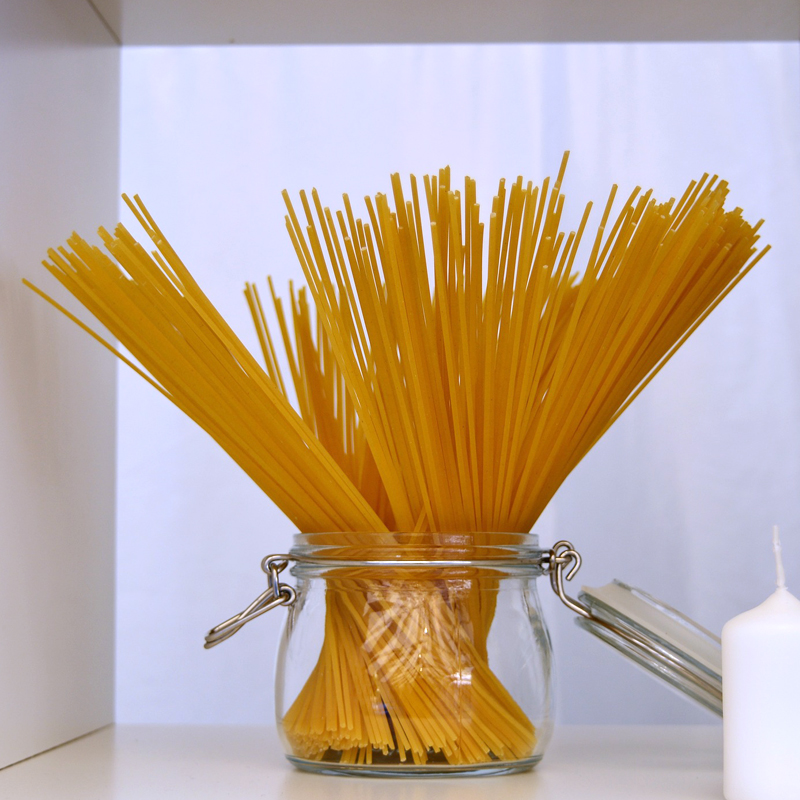
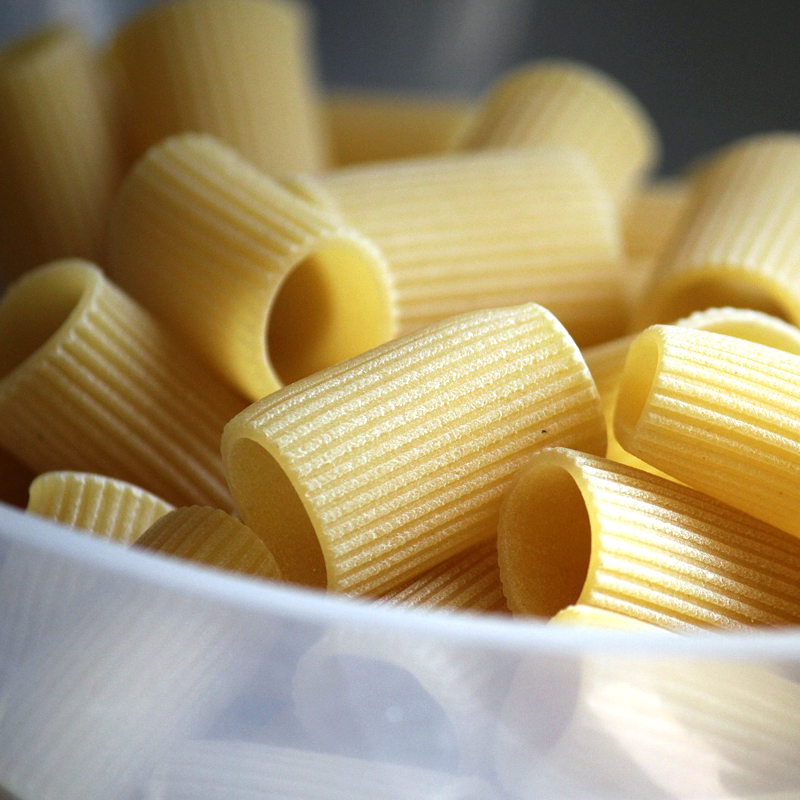
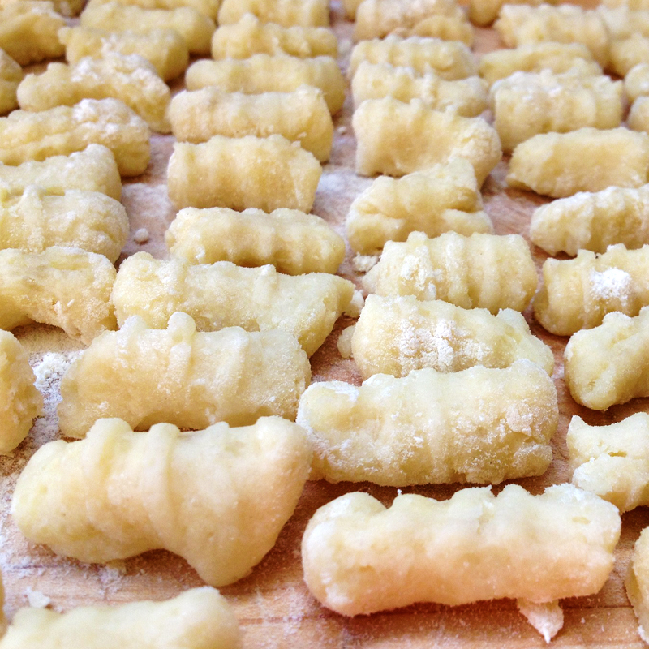
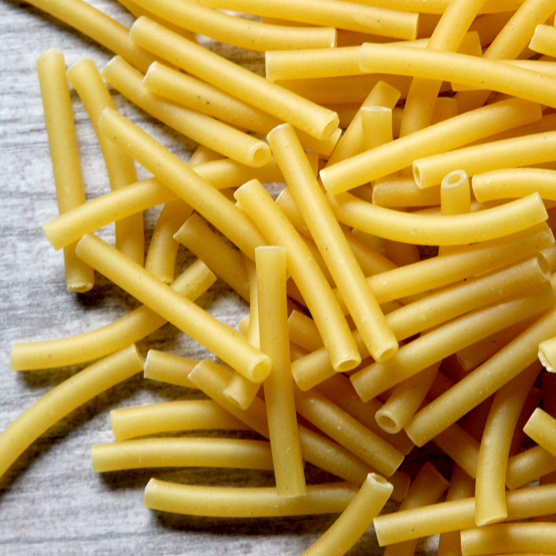
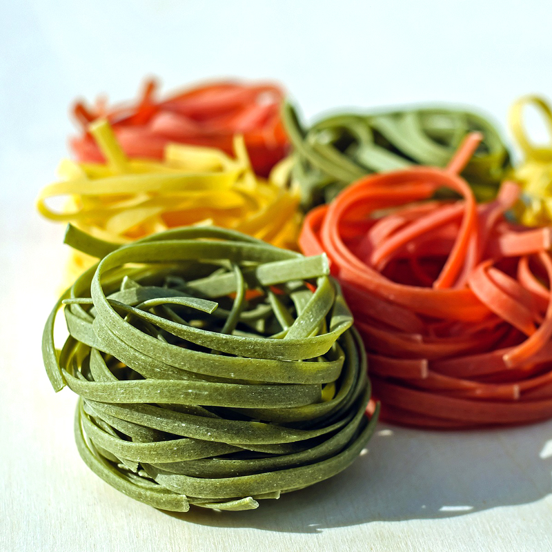
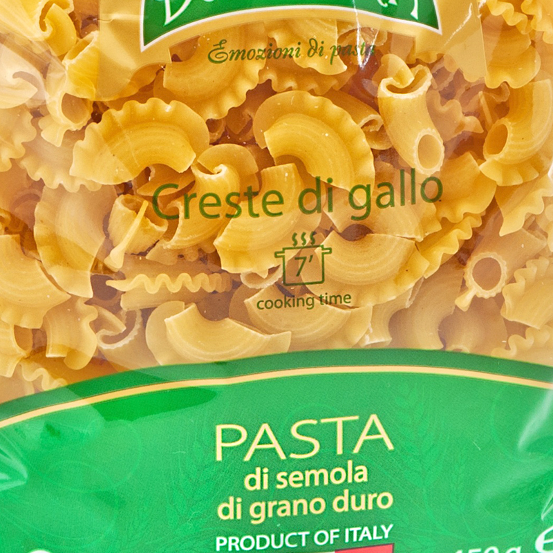

-
mom
labal -
Kucucina쿠쿠치나
#쿠쿠치나#압구정로데오#파스타맛집#맛있다그램#분위기#인테리어#디저트비주얼#굿굿#instaspot
푸드 예술작품의 집합소
#Road1 ‘ Kucucina ’ 2018년 1월 23일, 뉴요커의 입맛을 사로잡은 뉴욕 2 스타 출신 셰프와 파티셰가 “쿠셰프의 주방＂이라는 뜻의 이탈리안 레스토랑 “Kucucina”를 압구정 로데오에 오픈했다. 쿠쿠치나는 조명과 사진, 미술작품들로 힘을 준 인테리어와 예술 작품을 연상케 하는 음식들이 조화를 이뤄 단순한 레스토랑이 아닌 미술관에 온 듯한 느낌을 준다. 또, 도시 속 작은 숲을 연상하게 하는 입구의 포토존부터 핑크와 그레이 색이 완벽히 어우러진 실내 인테리어까지 손님들이 사진을 찍을 수밖에 없는 분위기를 제공하고 있다. 또, 비주얼뿐만 아니라 음식에서도 메뉴 결정 장애가 생길 정도로 모든 요리를 최상급으로 선보이고 있다. 오픈한 지 반년 밖에 되지 않은 새싹 레스토랑이지만, 쿠쿠치나 셰프들은 뉴욕에서의 경험을 바탕으로 뉴욕 최고의 맛을 손님들에게 선사하고 있다.
왜 ‘ Kucucina ’여야 하는가 압구정로데오에 많은 이탈리안 레스토랑이 자리해 있지만, 지갑이 열릴 수 밖에 없는 쿠쿠치나만의 매력을 3가지로 정리해 보았다.
Point 1. 골라 먹는 재미, 수타면 쿠쿠치나는 골라 먹는 재미가 있을 정도로 다양한 종류의 생면을 선보이고 있다. 더욱이 그 생면들을 이탈리아산 밀가루를 사용해 수타로 뽑고 있어, 신선할 뿐만 아니라 식감이 훨씬 더 쫄깃하고 부드럽게 만들어 준다. 이처럼 종류의 다양성과 함께 건면보다 표면이 부드러운 생면이 소스와 잘 어우러져 파스타의 맛을 깊고 풍부하게 만들기 때문에 우리는 이 곳을 찾을 수 밖에 없다. 이뿐만 아니라 쿠쿠치나는 끊임없는 연구를 통해 신메뉴를 탄생시키고 있는데, 메뉴가 개발될 때마다 새로운 생면을 선보이고 있어 다음 신메뉴를 기대하게 한다.
- 
- 
- 
- 
- 
- 
- 왼쪽부터
- 1. 가늘고 기다란 원통형의 롱 파스타 – 스파게티
- 2. 각종 소스와 잘 어울리는 관 모양의 큰 파스타 – 리가토니
- 3. 감자와 치즈, 밀가루를 반죽하여 만든 파스타 - 뇨끼
- 4. 한쪽 끝이 컬 모양으로 되어있는 짧은 파스타면 - 그라미냐
- 5. 얇게 민 반죽을 돌돌 말아서 자른 이탈리아식 칼국수 – 딸리아딸레
- 6. 날개모양의 파스타면 - 크레스테
Point 2. 메인 요리의 놀라운 맛! 쿠쿠치나는 요리 하나하나 많은 정성을 들여 제공하고 있어, 모든 메인 요리들이 각각의 매력적인 특성을 잘 드러내고 있다. 특히 100% 수제 생면을 사용해 만든 수타면이 소스와 잘 어우러져 파스타의 맛을 더 극대화 시켜주고 있다. 트러플 파스타와 우니 파스타 등 프리미엄급 파스타 뿐만 아니라, 치즈 맛을 진하게 느낄 수 있는 버섯 리조또와 담백하게 씹히는 조개맛이 일품인 봉골레 스파게티 등 대중적인 파스타까지 다양한 종류의 메인 요리를 만날 수 있다. 최근에는 철저한 관리를 통해 부드러운 육질, 선명한 고기 색, 풍부한 육즙을 유지한 ‘0도 워터에이징 한우 스테이크’를 출시해 스테이크에도 신경을 쓰고 있다. 여기에 뉴욕의 조리 경험을 바탕으로 풍미를 더해주는 다양한 소금과 소스 그리고 최상의 가니쉬를 스테이크에 곁들어 힘을 주고 있다.
- 우니먹물 크레스테
-
# 우니 먹물 크레스테 마늘, 꽃게, 새끼 갑오징어, 토마토 꽁까세로 육수를 낸 파스타로, 플레이팅 되어 있는 우니를 비벼 먹으면 고소하고 고급진 맛을 더해준다. 특히 다른 곳에서는 보기 힘든 초승달 모양의 크레스테 면을 오징어 먹물에 넣어서 사용하는데, 다른 면에 비해 쫄깃쫄깃한 식감을 배로 느낄 수 있다.
-
# 로제 생면 스파게티 토마토 베이스에 크림소스가 들어가 장미 빛이 도는 로제 스파게티는 부드러운 맛 뿐만 아니라 시각적으로도 화사함을 보여준다. 풍부하게 들어간 해산물이 고소한 맛을 한층 더 높여주고, 소스와 잘 어우러진 생면이 맛을 더 깊고 풍부하게 만들어 준다.
- 로제 생면 스파게티
Point 3. 비주얼 폭발! 수제 디저트 비주얼로 승부? NO 맛으로 승부! 식전 빵인 올리브 포카치아조차 환상적인 맛을 자랑하고, 아포카토의 바닐라 아이스크림까지 직접 만드는 엄청난 실력의 이승화 파티셰가 있는 쿠쿠치나. 고급진 비주얼에 맛까지 훌륭한 쿠쿠치나는 디저트 맛집으로 분류되어도 손색없는 곳이다.
- 티라미수
-
# 티라미수 바닐라 시트에 부드러운 텍스처의 마스카포네 크림이 흘러 내리는 너무 달지 않고 부드러운 맛이 일품인 디저트다.
-
# 파나코타 바닐라 시트에 리코타 치즈, 마스카포네, 크림치즈로 베이스를 만들고 포도 머랭, 식용 꽃, 바닐라 크럼블로 감각 있게 장식한 얼음 과자다. 제철 과일을 쓰기 때문에 포도는 방문할 때마다 다른 과일로 대체 될 수 있다. 밑에서부터 떠 치즈와 샤베트를 같이 먹는 걸 권장한다.
- 파나코타
맛답터들을 위한 꿀 TIP!
좀 더 효율적으로 쿠쿠치나를 즐기고 싶다면 2시 전에 방문해 LUNCH SET를 주문할 것!
최고의 셰프가 100% 생면으로 만든 파스타부터 감각 있는 파티쉐의 비주얼 폭발 디저트까지 코스별로 편하게 즐길 수 있다.


Editor.D 레스토랑을 선택함에 있어 맛과 멋, 둘 다 동일한 비율로 고려하는 나에게 최적인 장소. 런치엔 효율적인 가격에 시그니처 요리까지 즐길 수 있으니, 가성비도 챙기고 일석이조!
Editor.S 평소 해산물보다는 고기를 더 좋아하지만 이곳은 달랐다. 바다의 향기를 머금은 우니 크레스테와 쭈꾸미와 새우가 가득 들어간 로제 파스타는 잊을 수 없을 것 같다.
- 서울특별시 강남구 압구정로 50길 27 2F
- Lunch Service 11:45 – 14:30
- Dinner Service 17:30 – 22:00
- * Day Off : Sunday
- 02-516-0205 | 발렛 파킹 가능
- 우니 먹물 크레스테 25,000원
- 볼로네제 딸리아딸레 17,000원
- 파나코타 8,000원
- 아메리카노 3,000원
- 하우스와인(레드, 화이트) 1잔 5,000원
| Editor. S